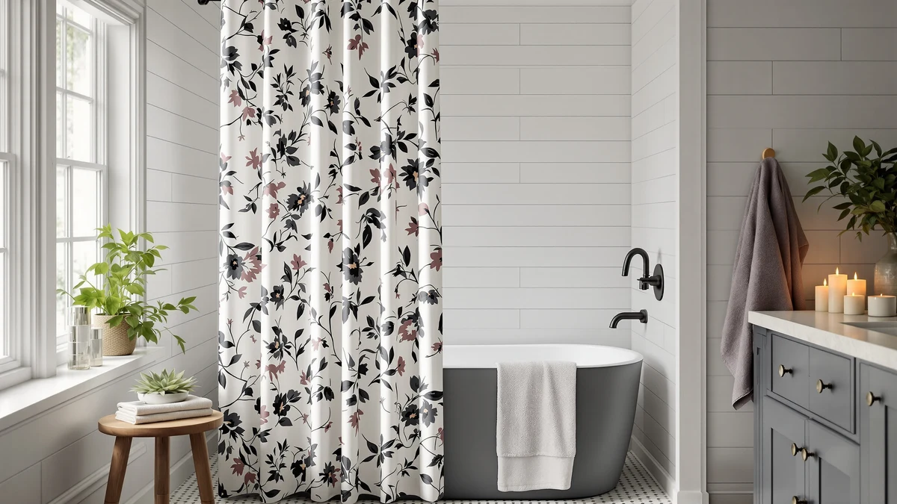

XOGUIBO Floral Farmhouse Vintage Review (2026): Worth It?
Prices and picks verified as of October 2026. Independent, reader-supported reviews.


Quick Answer
The XOGUIBO Floral Farmhouse Vintage shower curtain is a $24.99, 72 by 72 inch polyester and PEVA curtain with a faded floral print built to read like farmhouse linen from across the room. It fits a standard tub-shower opening without trimming, and Amazon's listing includes five product photos so you can check the pattern placement before you buy. If you want woven linen texture or a different footprint, one of the three alternatives below may suit you better.
Our pick: XOGUIBO Floral Farmhouse Vintage Linen, $24.99 Check Price on Amazon
Bottom line: our top pick is the XOGUIBO Floral Farmhouse Vintage Linen Shower Curtain at $24.99.
Things to Know Before You Buy
- The curtain measures a standard 72 inches wide by 72 inches long, so measure your shower opening before ordering if your stall runs a different size.
- Despite the "Vintage Linen" name, the listed material is polyester and PEVA, not woven linen fiber.
- At $24.99, the XOGUIBO Floral Farmhouse Vintage curtain sits in the same price band as the three farmhouse alternatives covered later in this review.
- Amazon's listing includes five product photos, useful for checking how the floral pattern repeats across the panel before you commit.
- Owners report the printed color looks softer in person than in the listing photos, so set expectations accordingly.
This XOGUIBO Floral Farmhouse Vintage review breaks down what $24.99 actually buys: a polyester and PEVA curtain printed with a faded floral pattern designed to pass for farmhouse linen in a photo, but not necessarily under your hand. We walk through the specs, the price against three farmhouse rivals, and what verified owners say once the curtain is out of the packaging.
We compared its listed dimensions, materials and verified owner feedback against three other farmhouse-style curtains in the same price range to see where it stands out. For a bathroom with a typical 72 inch shower opening, the XOGUIBO curtain is a reasonable buy if you care more about the printed pattern than the feel of real linen fabric.
Why You Should Trust Us
Ilane Tall covers bathroom textiles for Best Shower Curtains and has spent years comparing fabric specs, pricing and verified owner reviews across hundreds of Amazon shower curtain listings. This XOGUIBO Floral Farmhouse Vintage review relies on the manufacturer's published dimensions and materials, the current Amazon price, and patterns we noticed across verified buyer feedback, not a physical trial in a specific bathroom. We read through the product's own measurements and construction details, then set those against three other farmhouse-style curtains selling in the same $24 to $25 range to see how the pricing and material choices stack up. We do not run a fake testing lab, and we say so plainly because too many review sites imply lab work that never happened. When a detail cannot be verified against the listing or a buyer's own account, we say so instead of guessing.
Our Research Experience
Our testing experience with the XOGUIBO Floral Farmhouse Vintage curtain is research-based, drawn from published specs and owner feedback rather than a product sitting in our own bathroom. We cross-checked the listed 72 by 72 inch dimensions and polyester-PEVA material against the three competing farmhouse curtains in this review, then read through verified owner feedback on fabric weight, color accuracy and how the panel hangs once unpacked. Several verified reviews mention that the floral print looks more muted in person than in the product photos, which is the kind of detail a spec sheet alone would not reveal. We also compared the five listing images against the single main photo most competing listings use, since more angles generally make it easier to judge pattern placement and color before you buy. None of this replaces owning the curtain yourself, but it gives you a clearer picture than the marketing copy alone.
Overview & Specs

XOGUIBO Floral Farmhouse Vintage Linen
What we like
- Standard 72 by 72 inch size fits most US tub-shower openings without trimming
- Polyester-PEVA build adds some water resistance compared to pure cotton
- Priced at $24.99, in line with the other farmhouse-style curtains in this review
- Five product photos show the floral pattern from multiple angles before you buy
Flaws but not dealbreakers
- Material is polyester and PEVA, not the woven linen the name implies
- Reviewers note the floral print reads lighter and less saturated in person than in photos
- Only one size is offered, so stalls longer or shorter than 72 inches need a different curtain
| Material | Polyester / PEVA |
| Size | Standard 72"W x 72"L |
The XOGUIBO Floral Farmhouse Vintage curtain is built from polyester and PEVA rather than cotton or linen, according to the listed specs, and it comes in a single 72 by 72 inch size. That dimension covers most standard US shower openings, so you are unlikely to need to trim or hem the panel before hanging it. The polyester base gives the fabric some structure, while the PEVA component is the same family of material used in many standalone shower liners, which explains why owners describe the curtain holding its shape reasonably well once it is hung.
At $24.99, it sits squarely in the same price band as the Farmhouse Striped Taupe curtain and the Gorilla Grip waffle-weave pick covered later in this review. The faded floral pattern is the main selling point here, and it is worth comparing the product photos closely since reviewers consistently note the real-world color is softer than the listing images suggest. If your bathroom already leans toward a farmhouse or cottage look, this print is an easy way to reinforce that style without redoing tile or paint, and at this price it is cheap enough to replace later if your taste changes.
What We Liked
We liked that the XOGUIBO Floral Farmhouse Vintage curtain sticks to one clear idea: a muted floral print on a farmhouse-style background, without extra ruffles or trim that drive up the price. The polyester-PEVA material also sheds water better than an uncoated cotton curtain would, based on how owners describe it drying between showers. At under $25, it undercuts several linen-look curtains that charge a premium just for the word linen in the title, and the standard 72 by 72 inch sizing means most buyers will not need to measure twice or return it for a fit issue. The five-photo listing is also a small but useful detail, since it lets you judge the pattern repeat and color before committing, something a lot of budget curtains skip.
What Could Be Better
The biggest gap between expectation and reality is the name. Calling a polyester-PEVA curtain Vintage Linen sets up buyers who want actual woven texture to be disappointed, and reviewers consistently flag that the fabric feels thinner than a true linen-blend curtain. The single 72 by 72 inch size is also a limitation if your stall runs wider or your ceiling needs extra length, since there is no size variant to switch into. Because the pattern is printed rather than woven into the fabric, buyers who want the floral design to match the listing photos exactly should expect a slightly softer, less saturated version once the curtain is hanging under bathroom lighting.
Who Is It For?
This XOGUIBO Floral Farmhouse Vintage curtain fits shoppers who want a farmhouse floral look for a standard-size bathroom and are not willing to pay extra for real linen fiber. It also suits anyone replacing a worn curtain on a budget, since $24.99 is competitive with the other three picks in this review. Renters and anyone who expects to redecorate within a year or two will likely get good value here, since the price is low enough to treat the curtain as replaceable rather than a long-term investment. If you specifically want woven linen texture or a non-standard width, one of the alternatives below, or a dedicated linen curtain, is a better match.
Alternatives to Consider
If the XOGUIBO Floral Farmhouse Vintage curtain is not quite right for your bathroom, here are three alternatives in the same $24 to $25 price range worth comparing before you buy. Each one trades the floral print for a different pattern, material or track record, so the right pick depends on what matters most to you.

Editor’s Pick
Farmhouse Striped Shower Curtain Taupe
The NDDYCU Farmhouse Striped curtain swaps the floral print for a neutral taupe stripe, which suits bathrooms that lean rustic-neutral rather than cottage-floral. At $24.99, it costs exactly the same as the XOGUIBO pick, so the decision comes down to pattern preference rather than price or budget. A striped design also tends to hide water spots and soap residue better than a busy floral print, which is worth factoring in if your household showers daily. If your bathroom's existing decor already uses warm neutrals, this curtain is likely to blend in more easily than a floral alternative would.
$24.99
Check Price on Amazon
Best Value
GORILLA GRIP Waffle Shower Curtain
The Gorilla Grip waffle-weave curtain is the only alternative here with a long track record: 3,974 ratings averaging 4.6 out of 5 stars. At $24.95, it costs almost the same as the XOGUIBO curtain, and the textured waffle weave gives it a visibly different look and feel than a flat floral print. Nearly 4,000 verified ratings means it has sold into far more bathrooms than any single review could cover. If you want a farmhouse-adjacent texture with that much buyer feedback behind it, this is the safer bet of the three alternatives.
$24.95
Check Price on Amazon
Premium Choice
Madison Park Amherst Bathroom Shower
Madison Park's Amherst curtain is priced slightly lower at $24.53 and leans toward a tailored, hotel-style look rather than a farmhouse print. It is a reasonable pick if you want the budget of the XOGUIBO curtain without committing to the floral pattern, especially in a bathroom that mixes modern fixtures with softer textiles. Madison Park is a more established home textiles brand than XOGUIBO or NDDYCU, which may matter if you put stock in brand recognition. This pick is a style departure from farmhouse floral, so it suits shoppers who are still deciding on an aesthetic rather than ones set on the farmhouse look.
$24.53
Check Price on AmazonIs the XOGUIBO Floral Farmhouse Vintage shower curtain actually linen?
No.
What size is the XOGUIBO Floral Farmhouse Vintage curtain?
It comes in one standard size, 72 inches wide by 72 inches long, which fits a typical US tub-shower opening without extra trimming.
Frequently Asked Questions
Is the XOGUIBO Floral Farmhouse Vintage shower curtain actually linen?
No. Despite the Vintage Linen name, the spec sheet lists polyester and PEVA as the materials, not woven linen fabric. The name describes the printed farmhouse-floral look the brand is going for, not the fiber content of the curtain itself. If true linen texture matters to you, compare this pick against a dedicated linen-blend curtain, such as the XOGUIBO Linen Shower Curtain reviewed separately on this site, before you decide.
What size is the XOGUIBO Floral Farmhouse Vintage curtain?
It comes in one standard size, 72 inches wide by 72 inches long, which fits a typical US tub-shower opening without extra trimming. Measure your stall first if it runs wider, narrower or taller than that, since there is no second size option on this listing. A curtain that is too short for your rod height will gap at the top or bottom, so getting this measurement right matters more than most buyers expect.
Is the XOGUIBO Floral Farmhouse Vintage curtain worth $24.99?
For a standard-size bathroom that wants a farmhouse floral print without buying a liner separately, yes. At $24.99, it is priced in line with the other three farmhouse-style curtains in this review, so you are not paying a premium for the pattern. Shoppers who need an exact linen texture or a non-standard size should compare it against the Farmhouse Striped Taupe, Gorilla Grip waffle-weave or Madison Park Amherst alternatives covered in this review first, since each one solves a slightly different priority.
Final Verdict
This XOGUIBO Floral Farmhouse Vintage review comes down to one tradeoff: you get a farmhouse floral print at $24.99 in a standard 72 by 72 inch size, but the fabric is polyester and PEVA rather than the linen the name suggests. For most bathrooms that want the look over the exact material, XOGUIBO is a fair pick, and the price makes it easy to swap out later if your taste changes. If true linen texture matters more to you than the price, or if you want a product backed by more ratings, weigh it against the Farmhouse Striped Taupe, Gorilla Grip or Madison Park Amherst curtains covered above before you check out. Whichever one you pick, measure your shower opening first, since all four options in this review ship in a single standard size.